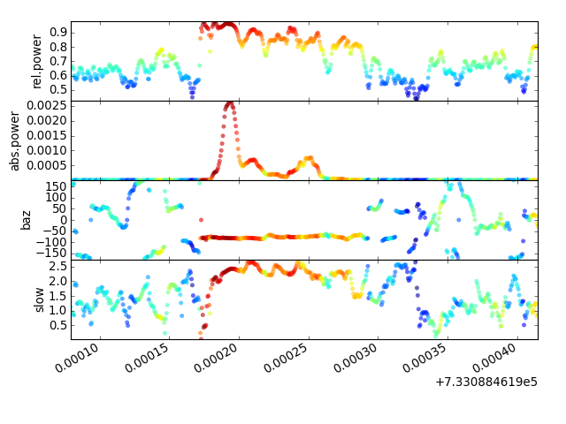
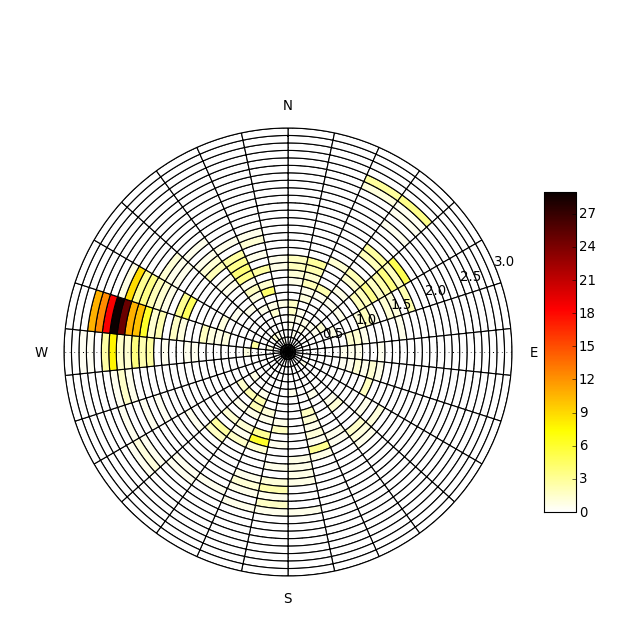

The following code shows how to do an FK Analysis with ObsPy. The data are from the blasting of the AGFA skyscraper in Munich. We execute sonic() using the following settings:
The output will be stored in out.
The second half shows how to plot the output. We use the output out produced by sonic(), which are numpy ndarrays containing timestamp, relative power, absolute power, backazimuth, slowness. The colorbar corresponds to relative power.
from obspy.core import read, UTCDateTime, AttribDict
from obspy.signal import cornFreq2Paz
from obspy.signal.array_analysis import sonic
import matplotlib.pyplot as plt
# Load data
st = read("http://examples.obspy.org/agfa.mseed")
# Set PAZ and coordinates for all 5 channels
st[0].stats.paz = AttribDict({
'poles': [(-0.03736 - 0.03617j), (-0.03736 + 0.03617j)],
'zeros': [0j, 0j],
'sensitivity': 205479446.68601453,
'gain': 1.0})
st[0].stats.coordinates = AttribDict({
'latitude': 48.108589,
'elevation': 0.450000,
'longitude': 11.582967})
st[1].stats.paz = AttribDict({
'poles': [(-0.03736 - 0.03617j), (-0.03736 + 0.03617j)],
'zeros': [0j, 0j],
'sensitivity': 205479446.68601453,
'gain': 1.0})
st[1].stats.coordinates = AttribDict({
'latitude': 48.108192,
'elevation': 0.450000,
'longitude': 11.583120})
st[2].stats.paz = AttribDict({
'poles': [(-0.03736 - 0.03617j), (-0.03736 + 0.03617j)],
'zeros': [0j, 0j],
'sensitivity': 250000000.0,
'gain': 1.0})
st[2].stats.coordinates = AttribDict({
'latitude': 48.108692,
'elevation': 0.450000,
'longitude': 11.583414})
st[3].stats.paz = AttribDict({
'poles': [(-4.39823 + 4.48709j), (-4.39823 - 4.48709j)],
'zeros': [0j, 0j],
'sensitivity': 222222228.10910088,
'gain': 1.0})
st[3].stats.coordinates = AttribDict({
'latitude': 48.108456,
'elevation': 0.450000,
'longitude': 11.583049})
st[4].stats.paz = AttribDict({
'poles': [(-4.39823 + 4.48709j), (-4.39823 - 4.48709j), (-2.105 + 0j)],
'zeros': [0j, 0j, 0j],
'sensitivity': 222222228.10910088,
'gain': 1.0})
st[4].stats.coordinates = AttribDict({
'latitude': 48.108730,
'elevation': 0.450000,
'longitude': 11.583157})
# Instrument correction to 1Hz corner frequency
paz1hz = cornFreq2Paz(1.0, damp=0.707)
st.simulate(paz_remove='self', paz_simulate=paz1hz)
# Execute sonic
kwargs = dict(
# slowness grid: X min, X max, Y min, Y max, Slow Step
sll_x=-3.0, slm_x=3.0, sll_y=-3.0, slm_y=3.0, sl_s=0.03,
# sliding window properties
win_len=1.0, win_frac=0.05,
# frequency properties
frqlow=1.0, frqhigh=8.0, prewhiten=0,
# restrict output
semb_thres=-1e9, vel_thres=-1e9, timestamp='mlabday',
stime=UTCDateTime("20080217110515"), etime=UTCDateTime("20080217110545")
)
out = sonic(st, **kwargs)
# Plot
labels = ['rel.power', 'abs.power', 'baz', 'slow']
fig = plt.figure()
for i, lab in enumerate(labels):
ax = fig.add_subplot(4, 1, i + 1)
ax.scatter(out[:, 0], out[:, i + 1], c=out[:, 1], alpha=0.6,
edgecolors='none')
ax.set_ylabel(lab)
ax.set_xlim(out[0, 0], out[-1, 0])
ax.set_ylim(out[:, i + 1].min(), out[:, i + 1].max())
fig.autofmt_xdate()
fig.subplots_adjust(top=0.95, right=0.95, bottom=0.2, hspace=0)
plt.show()
[source code, hires.png, pdf]

Another representation would be a polar plot, which sums the relative power in gridded bins, each defined by backazimuth and slowness of the analyzed signal part. The backazimuth is counted clockwise from north, the slowness limits can be set by hand.
from obspy.core import read, UTCDateTime, AttribDict
from obspy.signal import cornFreq2Paz
from obspy.signal.array_analysis import sonic
# Load data
st = read("http://examples.obspy.org/agfa.mseed")
# Set PAZ and coordinates for all 5 channels
st[0].stats.paz = AttribDict({
'poles': [(-0.03736 - 0.03617j), (-0.03736 + 0.03617j)],
'zeros': [0j, 0j],
'sensitivity': 205479446.68601453,
'gain': 1.0})
st[0].stats.coordinates = AttribDict({
'latitude': 48.108589,
'elevation': 0.450000,
'longitude': 11.582967})
st[1].stats.paz = AttribDict({
'poles': [(-0.03736 - 0.03617j), (-0.03736 + 0.03617j)],
'zeros': [0j, 0j],
'sensitivity': 205479446.68601453,
'gain': 1.0})
st[1].stats.coordinates = AttribDict({
'latitude': 48.108192,
'elevation': 0.450000,
'longitude': 11.583120})
st[2].stats.paz = AttribDict({
'poles': [(-0.03736 - 0.03617j), (-0.03736 + 0.03617j)],
'zeros': [0j, 0j],
'sensitivity': 250000000.0,
'gain': 1.0})
st[2].stats.coordinates = AttribDict({
'latitude': 48.108692,
'elevation': 0.450000,
'longitude': 11.583414})
st[3].stats.paz = AttribDict({
'poles': [(-4.39823 + 4.48709j), (-4.39823 - 4.48709j)],
'zeros': [0j, 0j],
'sensitivity': 222222228.10910088,
'gain': 1.0})
st[3].stats.coordinates = AttribDict({
'latitude': 48.108456,
'elevation': 0.450000,
'longitude': 11.583049})
st[4].stats.paz = AttribDict({
'poles': [(-4.39823 + 4.48709j), (-4.39823 - 4.48709j), (-2.105 + 0j)],
'zeros': [0j, 0j, 0j],
'sensitivity': 222222228.10910088,
'gain': 1.0})
st[4].stats.coordinates = AttribDict({
'latitude': 48.108730,
'elevation': 0.450000,
'longitude': 11.583157})
# Instrument correction to 1Hz corner frequency
paz1hz = cornFreq2Paz(1.0, damp=0.707)
st.simulate(paz_remove='self', paz_simulate=paz1hz)
# Execute sonic
kwargs = dict(
# slowness grid: X min, X max, Y min, Y max, Slow Step
sll_x=-3.0, slm_x=3.0, sll_y=-3.0, slm_y=3.0, sl_s=0.03,
# sliding window properties
win_len=1.0, win_frac=0.05,
# frequency properties
frqlow=1.0, frqhigh=8.0, prewhiten=0,
# restrict output
semb_thres=-1e9, vel_thres=-1e9, timestamp='mlabday',
stime=UTCDateTime("20080217110515"), etime=UTCDateTime("20080217110545")
)
out = sonic(st, **kwargs)
# Plot
from matplotlib.colorbar import ColorbarBase
from matplotlib.colors import Normalize
import matplotlib.cm as cm
import matplotlib.pyplot as plt
import numpy as np
cmap = cm.hot_r
pi = np.pi
#
# make output human readable, adjust backazimuth to values between 0 and 360
t, rel_power, abs_power, baz, slow = out.T
baz[baz < 0.0] += 360
# choose number of fractions in plot (desirably 360 degree/N is an integer!)
N = 30
abins = np.arange(N + 1) * 360. / N
sbins = np.linspace(0, 3, N + 1)
# sum rel power in bins given by abins and sbins
hist, baz_edges, sl_edges = np.histogram2d(baz, slow,
bins=[abins, sbins], weights=rel_power)
# transform to gradient
baz_edges = baz_edges / 180 * np.pi
# add polar and colorbar axes
fig = plt.figure(figsize=(8, 8))
cax = fig.add_axes([0.85, 0.2, 0.05, 0.5])
ax = fig.add_axes([0.10, 0.1, 0.70, 0.7], polar=True)
dh = abs(sl_edges[1] - sl_edges[0])
dw = abs(baz_edges[1] - baz_edges[0])
# circle through backazimuth
for i, row in enumerate(hist):
bars = ax.bar(left=(pi / 2 - (i + 1) * dw) * np.ones(N),
height=dh * np.ones(N),
width=dw, bottom=dh * np.arange(N),
color=cmap(row / hist.max()))
ax.set_xticks([pi / 2, 0, 3. / 2 * pi, pi])
ax.set_xticklabels(['N', 'E', 'S', 'W'])
# set slowness limits
ax.set_ylim(0, 3)
ColorbarBase(cax, cmap=cmap,
norm=Normalize(vmin=hist.min(), vmax=hist.max()))
plt.show()
[source code, hires.png, pdf]
